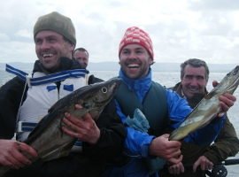
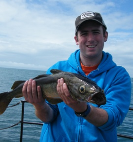

|
Clew Bay is home to many species of fish. There are vast areas of sand and shingle, home to many species of flat fish. Turbot, Ray and Skate are common. Flounder, Place and Dab are also common near the shallower waters of the inner bay. Tope are also visitors from March right through to November. We are also lucky to have several reefs in the bay, with the usual species lurking. Mackerel usually arrive from mid April and make for fun fishing and fabulous eating, but also great bait for everything from Pollack to Shark. Blue Shark and Porbeagle are regulars and even Thresher and Mako Sharks have been spotted off Mayo. From the MV Spirit you can fish from all sides, meaning that even with a full complement of passengers there is room for all to fish. Of course, there is the added attraction of arriving safely, quickly and in dry comfort at your fishing grounds. M.V. Spirit carries a selection of rods and reels, feathers and baits. All are available to hire or buy. There is also a tackle shop on the quay to load up on all the gear you might want. All day angling for up to 12 people - circa 8 hours €450/€550 Occasionally smaller parties can be accommodated at €25 to €50 per head. |
 Brought a group of 2 adults & 7 kids age 11-13 for my son's birthday for an afternoon's fishing. Absolutely fantastic day, very friendly, helpful, informative & a great boat, very well equipped and organised. I cannot recommend it highly enough- Kids all caught buckets of Mackeral (they gutted & cooked and ate with chips for their party) + a few other species- took a detour to see some Grey Seals. Reasonably priced. Do it!! - Nick Miller
 |